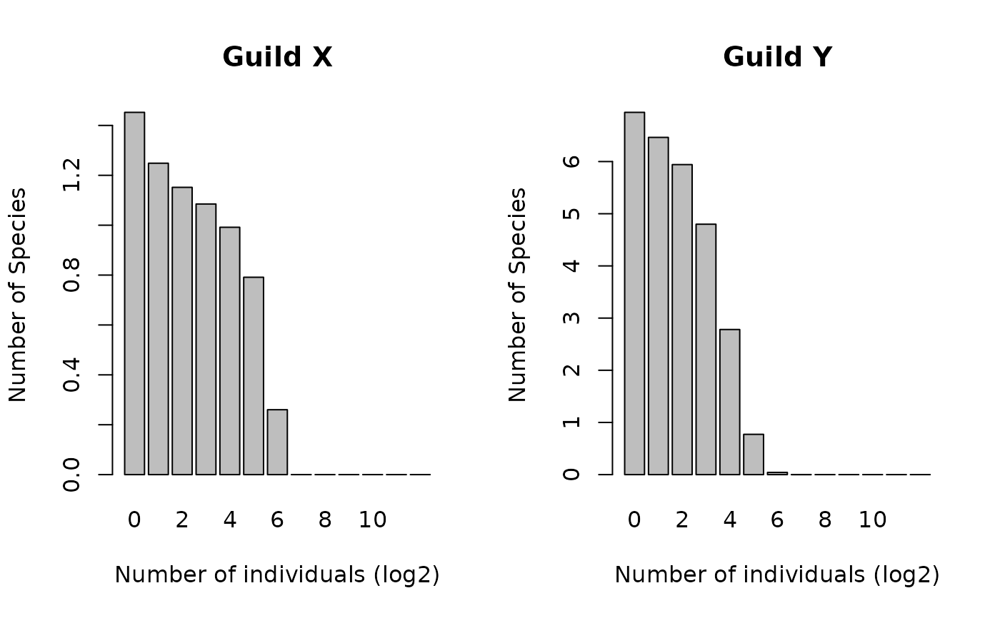

Estimate the expected species abundance distribution of both guilds using the guilds model, provided theta, alpha_x, alpha_y, conditional on the size of guild X, Jx and the size of guild Y, Jy.
expected.SAD.Guilds.Conditional.RdThis function estimates the expected species abundance distribution of both guilds using the guilds model, provided theta, alpha_x, alpha_y and J. The expected species abundance distribution is approximated by first drawing px from equation 9. Because the abundance distributions of the two guilds are independent, the distributions can now be obtained using equation 6 in Etienne and Alonso 2005. Because drawing from the beta distribution and equation 3 is inherently stochastic, this function returns the average over a specified number of replicates.
Value
- guildX
Vector containing the mean abundances of species in Guild X, binned into log2 bins
- guildY
Vector containing the mean abundances of species in Guild Y, binned into log2 bins
References
Etienne, R.S., & Alonso, D. (2005). A dispersal-limited sampling theory for species and alleles. Ecology Letters, 8(100), 1147-1156.
Examples
SADs <- expected.SAD.Guilds.Conditional(theta = 42,
alpha_x = 0.01,
alpha_y = 0.1,
Jx = 100,
Jy = 200,
n_replicates = 3)
par(mfrow=c(1,2))
barplot(SADs$guildX, names.arg=0:(length(SADs$guildX) - 1),
xlab = "Number of individuals (log2)",
ylab = "Number of Species", main = "Guild X" )
barplot(SADs$guildY, names.arg = 0:(length(SADs$guildY) - 1),
xlab = "Number of individuals (log2)",
ylab = "Number of Species", main = "Guild Y" )
